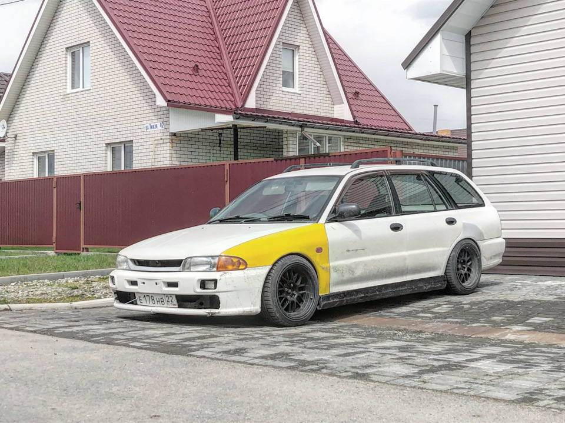
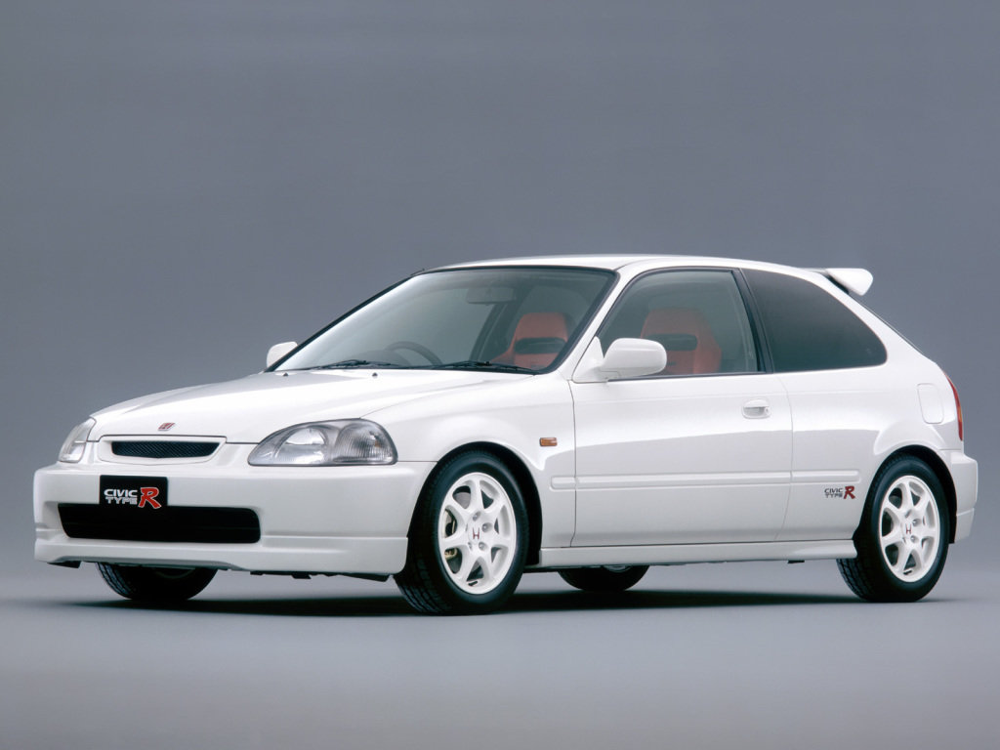
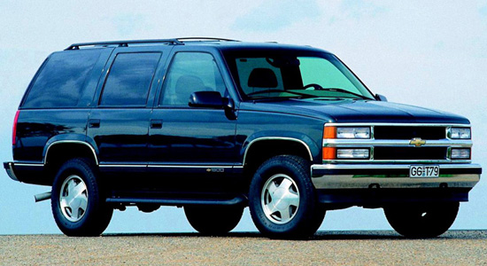
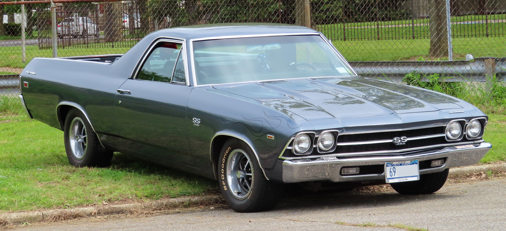
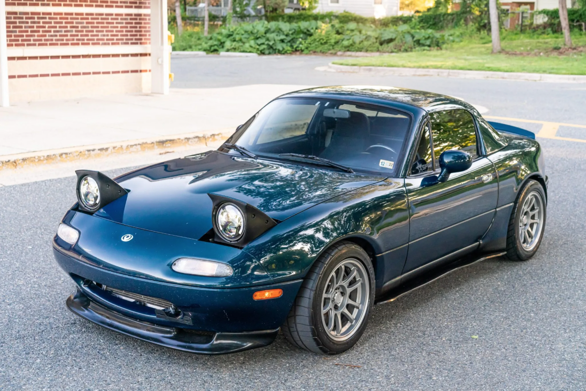

1. Mitsubishi libero

Этот универсал, созданный на основе Lancer, начал выпускаться в 1992 году. Libero имеет характерную, запоминающуюся внешность за счет оригинального оформления задней части кузова и линии, идущей по низу стекол. В самом начале выпуска модель имела передний привод или привод 4WD FULLTIME с центральным дифференциалом и оснащалась 1.8-литровым рядным 4-цилиндровым двигателем SOHC или 2-литровым дизельным двигателем с турбонаддувом. На 1.8-литровом двигателе устанавливают 5-ступенчатую механическую коробку переключения передач или 3-ступенчатый "AWтомат"; на дизельном двигателе - 5-ступенчатую механическую или 4-ступенчатую AWтоматическую трансмиссию.
- Название комплектации - 1.5 G 4WD
- Период выпуска 1995 - 2000
- Тип привода - Полный (4WD)
- Тип кузова - Универсал
- Тип трансмиссии - АКПП 4
- Объем двигателя, куб.см 1468
- Страна сборки - Япония
- Число дверей - 5
- Расположение руля - справа
Характеристики:
2. Honda civic
Шестое поколение Honda Civic было представлено 4 сентября 1995 года в следующих типах кузова: 3-дверный хетчбек, 4-дверный седан и двухдверное купе, повторяя модельный ряд предыдущего поколения. Чуть позже для Европы был представлен 5-дверный лифтбэк для замены модели Honda Concerto.
- Название комплектации - 1.5 LSi MT
- Период выпуска 1991 - 1995
- Тип привода - Передний
- Тип кузова - Седан
- Тип трансмиссии - МКПП 5
- Объем двигателя, куб.см 1493
- Страна сборки - Япония
- Число дверей - 4
- Расположение руля - справа
Характеристики:
3. Chevrolet Tahoe

Первое воплощение полноразмерного вседорожника Chevrolet Tahoe, представляющее собой слегка перелицованный вариант GMC Yukon, начало свою конвейерную жизнь в 1995 году и с самого своего появления стало пользоваться стабильной популярностью, особенно у американцев. Производство автомобиля продолжалось на заводах в США и Мексике до 2000 года, после чего настал черед модели второй генерации.
- Название комплектации - 5.7 AT LT 5dr.
- Период выпуска 1997 - 2000
- Тип привода - Полный (4WD)
- Тип кузова - SUV
- Тип трансмиссии - АКПП 4
- Объем двигателя, куб.см 5733
- Страна сборки - США
- Число дверей - 5
- Расположение руля - слева
Характеристики:
4. Chevrolet El Camino

Ют американской компании Шевроле. Выпускался с 1959 года до 1960 и с 1964 до 1987 год. El Camino появился в ответ на успешные продажи Ford Ranchero. В Мексике автомобиль назывался Chevrolet Conquistador. GMC Sprint, позднее переименованный в GMC Caballero являлся модификацией El Camino.
- Название комплектации - 5.0 MT
- Период выпуска 1968 - 1972
- Тип привода - Задний
- Тип кузова - Пикап
- Тип трансмиссии - МТ 3
- Объем двигателя, куб.см 5000
- Страна сборки - США
- Число дверей - 2
- Расположение руля - слева
Характеристики:
2. Honda civic
Родстер, появившийся в 1989 году, выпускающийся компанией Mazda. Разработка велась совместно с инженерами компании Lotus Cars, в результате автомобиль унаследовал главные черты классических британских спортивных автомобилей (легкий вес, двигатель внутри колёсной базы, задний привод, простота конструкции).
- Название комплектации - 1.6 MT
- Период выпуска 1990 - декабрь 1993
- Тип привода - Задний
- Тип кузова - Открытый кузов
- Тип трансмиссии - МКПП 5
- Объем двигателя, куб.см 1598
- Страна сборки - Япония
- Число дверей - 2
- Расположение руля - справа